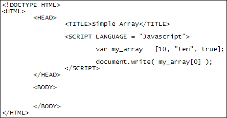

Javascript Arrays
A normalJavascript variable like var age = 18 holds a single piece of data. An array is a way to hold more than one piece of data under the same name. There's a few ways to set up an array but the simplest looks like this:
var my_array = [10, "ten", true];
This sets up an array to hold three values all under the single variable name we called my_array. Notice that you can store numbers, strings of text, and Boolean values in an array. Each value needs to be separated by a comma. The values need to go between two square brackets and after an equal sign.
To get at the values in your array you use something called the index value. This is a number between square brackets. The number corresponds to a value's position in the array (position numbers start at 0):
my_array[0]
my_array[1]
my_array[2]
So my_array[0] will hold the value 10, my_array[1] will hold the text "ten", and my_array[2] will hold the Boolean value true. You could then write the values to a web page:
document.write( my_array[0] + "<BR>");
document.write( my_array[1] + "<BR>");
document.write( my_array[2] + "<BR>");
Test it out with the following script:

Run the script in a browser and you should see the number 10 displayed. Now change the 0 in between the square brackets of my_array[0] to a 1. Save the change and refresh. The text "ten" will be written out. Change the 1 into a 2 and you'll see "true" displayed.
Now change the 2 into a 3. This time the word "undefined" will display. The reason is because you only set up your array to hold 3 items. When you typed a 3 instead of a 2 you were trying to access item number 4 (0 to 3, remember). But you haven't defined a fourth item. Even though you haven't got a fourth item, Javascript doesn't throw you up an error, it doesn't refuse to work. Instead, it adds a new position to the end of your array. You can even store something in this new position. Change your script to this (the new parts are in bold):
var my_array = [10, "ten", true];
document.write( my_array[3] + "<BR>");
my_array[3] ="new item";
document.write( my_array[3] );
Javascript first prints out "undefined" then "new item".
Notice the way we're assigning this new value:
my_array[3] ="new item";
On the left of the equal sign, we have the name of the array then a pair of square brackets. Inside of the square brackets is the array position number we want to access. After the equal sign you type the value you want to assign. So it's just like normal variable assignment except you add the square brackets and the array position after the variable name.
Another way to set up an array is with the new keyword:
var my_array = new Array( );
This time after the equal sign we have the word new then a space. The word Array comes next (uppercase A and never lowercase). Immediately after the word Array you need a pair of round brackets. If you like you can add how many positions the array is going to hold:
var my_array = new Array(3);
This says "set up an array with 3 positions". You don't have to add
any array positions, though. It's up to you.
However, when you're assigning values to each position you do need to add the
index positions. You do it like this:
var my_array = new Array( );
my_array[0] = 10;
my_array[1] = "ten";
my_array[2] = true;
So the first line sets up an array called my_array. The next three lines assign
values to each position in the new array. The method above is the one we'll
use to set up an array from now on.
Arrays and Loops
Arrays are quite often used with loops. That's because the index position of arrays are numbers that you swap for the loop variable. As an example, study the following code (of course, you can try it out as well):
var counter = 0;
var lottery_numbers = new Array();
while ( counter < 49 ) {
lottery_numbers[counter] = counter + 1;
document.write( lottery_numbers[counter] + "<BR>" );
counter++;
}
What the script does is to assign values to an array called lottery_numbers. We've used a while loop. The loop goes round and round executing this line:
lottery_numbers[counter] = counter + 1;
Instead of saying lottery_numbers[0], lottery_numbers[1], lottery_numbers[2], etc, we've replaced the index number with the variable name counter. We can do this because counter changes each time round the loop. Javascript knows what's in the counter variable and uses this as the index. After the equal sign, we're assigning whatever is in the counter variable (plus 1) to each position in the array. (Can you see why we'd need to add 1?)
There's a lot more you can do with arrays, and you'll meet them again in a
later section. For now, let's move on. Next up is functions.